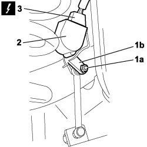

5540C46 SENSOR FOR CORRECTING/ALIGNING GAS DISCHARGE LIGHTING UNITS ON REAR SUSPENSION - R R
- Path
- Procedures > 55 ELECTRICAL EQUIPMENT > 5540 EXTERIOR LIGHTING > 5540C HEADLAMP/LIGHT CLUSTER ALIGNMENT CORRECTION DEVICES > 5540C46 SENSOR FOR CORRECTING/ALIGNING GAS DISCHARGE LIGHTING UNITS ON REAR SUSPENSION - R R
- Kind
- repair procedure (removal / refitting; the operation number is the code)
- Applies to
- all engines; all production periods
- Interactive page
- https://sloeber94.github.io/elrnDB-fCrm/en/#/194000753
Applies to: all engines; all production periods
 Removing
Removing
 Refitting
RefittingPosition the vehicle on a lift.
1. Undo the fixing nut (1a) and release the potentiometer connecting rod (1b).
2. Undo the fixing bolts and remove the rear headlamp alignment corrector potentiometer.
3. Disconnect the electrical connector for the headlamp alignment potentiometer.
Description | Connector | |
|---|---|---|
3 | REAR HEADLAMP ALIGNMENT CORRECTER POTENTIOMETER (CAF) | See K002 HEADLAMP ALIGNMENT CORRECTOR REAR POTENTIOMETER (CAF) |

Applies to: all engines; all production periods
Refitting
RemovingConnect the electrical connector for the headlamp alignment potentiometer.
Description | Connector | |
|---|---|---|
REAR HEADLAMP ALIGNMENT CORRECTER POTENTIOMETER (CAF) | See K002 HEADLAMP ALIGNMENT CORRECTOR REAR POTENTIOMETER (CAF) |
Place the headlamp alignment correcter potentiometer in position and tighten the fixing bolts
Tighten the nut fixing the end in the housing in the potentiometer connecting rod.
Remove the vehicle from the lift.